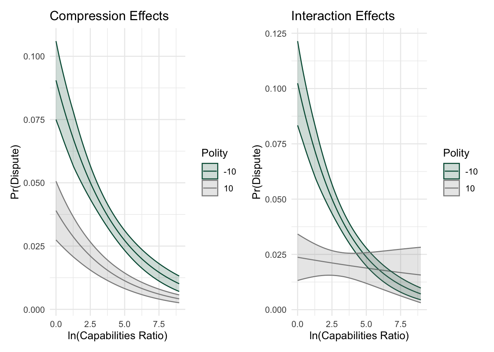

Interactions in nonlinear models
Everything you know about multiplicative interactions in linear models applies in the nonlinear context. It would very much be worth reviewing the slides on interactions in the linear model before proceeding.
Multiplicative Interactions
- coefficients on dummy variables represent intercept or level shifts; differential intercepts between groups on the dummy.
- structural stability (same slope across groups) - relaxed with multiplicative interactions.
- include constituents variables in the model.
- constituent interpretation is always conditional.
- interaction coefficient interpretation is always conditional.
- inference is always conditional. To evaluate whether \(\beta_1 + \beta_3 \neq 0\), we need to compute a standard error on \(\beta_1 + \beta_3\). Matt Golder’s web site is an excellent reference for anything interaction-related, and particularly for guidance on computing standard errors.
What’s the Difference? Compression.
In nonlinear models, the effects of \(x\) variables on \(Pr(y=1)\) are increasingly compressed as \(x\beta\) moves away from zero, and as \(Pr(y=1)\) moves towards its limits. Berry, DeMeritt, and Esarey (2010) seem to originate the term “compression” referring to the changing effects of \(x\) on \(y\) as \(x\beta\) changes in monotonic link functions (e.g. logit, probit, etc.). Compression is describing what Nagler (1994) calls “inherent” interaction in nonlinear models; it describes why the effects of \(x\) depend on the values of the other \(x\) variables in the model.
In the linear model, the effects of \(x\) are unconditional unless we include an interaction; in the nonlinear model, the effects are always conditional due to compression, even without a multiplicative interaction. So we need to answer two questions:
- how can we take advantage of “inherent interaction” due to compression?
- if models are inherently interactive, when or why do we need multiplicative interactions?
For the second question, this is a debate in the literature. Berry, DeMeritt, and Esarey (2010) suggest interaction terms are not always necessary; Rainey (2016) suggests otherwise.
Let’s think about the probability space and quantities of interest as a way to understand compression.
Quantities of interest
Predicted probability: \[Pr(y=1) = F(\beta_0 + \beta_1x_1+ \beta_2x_2)\]
Marginal Effect:
linear model:
\[\frac{\partial y}{\partial x_1} = \beta_1\]
nonlinear model:
\[\frac{\partial y}{\partial x_k} = \frac{\partial F(x\beta)}{\partial x_k} = \frac{\partial F(x\beta)}{\partial x\beta} \cdot \frac{\partial x\beta}{\partial x_k} = f(x\beta)\beta_k\]
Quantities of Interest: marginal effects
Logit:
\[\frac{\partial y}{\partial x_k} = \frac{\partial \Lambda(x\beta)}{\partial x_k} =\lambda(x\beta)\beta_k\] since the derivative of the CDF is the PDF, and where the logit pdf is
\[\lambda =\frac{e^{x\beta}}{(1+e^{x\beta})^2}\]
Logit Marginal Effect
The logit ME can be rewritten:
\[\begin{eqnarray} \frac{\partial \Lambda(x\beta)}{\partial x_k} =\lambda(x\beta) \cdot \beta_k \nonumber \\ =\left[\frac{e^{x\beta}}{(1+e^{x\beta})^2}\right] \cdot \beta_k \nonumber \\ = \left[\frac{e^{x\beta}}{(1+e^{x\beta})} \frac{1}{(1+e^{x\beta})}\right] \cdot \beta_k \nonumber \\ = \Lambda(x\beta) \left(1-\frac{e^{x\beta}}{1+e^{x\beta}}\right) \cdot \beta_k \nonumber \\ = \Lambda(x\beta)\cdot (1-\Lambda(x\beta)) \cdot\beta_k \nonumber \\ = Pr(y=0) \cdot Pr(y=1) \cdot \beta_k \nonumber \end{eqnarray}\]
Probit Marginal Effect
\[\frac{\partial y}{\partial x_k} = \frac{\partial \Phi(x\beta)}{\partial x_k} =\phi(x\beta)\beta_k\]
In both cases, you can see the effect of \(x_k\) depends explicitly on the value of \(x\beta\). Put differently, the marginal effect of \(x_k\) is {} on \(x\beta\), or where we are on the \(x\) axis.
Compression Effects
Compression refers to the different rates of change in the \(Pr(Y=1)\) across the probability range.
- the effects of changes in \(x\) are greatest at \(Pr(Y=1)=.5\).
- the effects of changes in \(x\) decline as \(Pr(Y=1)\) approaches the limits.
- the same change in \(x\) has an increasingly “compressed” smaller effect as \(Pr(Y=1)\Rightarrow(0,1)\).
Compression and Interaction
In the simulation below notice how the effects of \(x\) on \(y\) are different due to compression effects - that is, the effect of \(x\) is greatest at \(x=0, y=.5\), and declines as \(abs{x}\) increases. Also, notice how additive changes to the intercept shift the curve left-right, but do not change the slope at \(Pr(Y=1)\). Multiplicative (interactive) changes change the derivative of the curve. Notice that compression exists in both the interactive and non-interactive settings.
Why use an interaction?
This helps answer when/why we’d use an interaction. The derivatives at \(Pr(Y=1)\) shift in the interactive model, remain constant in the non-interactive model. Note several things:
- Compression effects are present regardless of the presence or absence of interactions. So the interactive model has compression and multiplicative interaction effects at work.
- The CDF shifts left-right based on intercept changes in \(x_i \beta\), but derivatives remain the same for values of \(y\).
- With interactions, the derivatives changes for values of \(y\); the derivative at \(Pr(Y=1)\) changes.
- Choosing the multiplicative model implies our theory tells us the slope at \(Pr(Y=1)\) is different due to \(x \dot z\).
- In the non-interactive model, \(\frac{\partial Pr(Y=1)}{\partial x_i\beta}=\frac{\partial Pr(Y=1)}{\partial x_j\beta}\); in the interactive model, this is not true.
When do we specify a multiplicative interaction?
when we believe that the changes in \(y\) are a function of \(x|z=i\ldots j\).
when we specifically think the slope (derivative) at a particular value of \(y\) given \(x\) is not structurally stable; i.e. it varies by groups on some variable \(z\).
Rainey (2016) suggests we err on the side of including interaction terms.
Compression & Interaction
- always explore compression effects. Postestimation, examine how changes in variable values shift the curve in interesting ways. Explore interesting combinations of variables.
- never rely on compression to handle a conditional expectation - if you have a conditional expectation, use a multiplicative interaction.
- there’s continuing interest in how to think about compression and interaction in the literature, so read what folks are saying.
Method
Computing QIs for interactions is not difficult, but has a number of moving parts. The go-to technique is laid out by Matt Golder as part of the materials accompanying Brambor, Clark, and Golder (2006). That technique unfolds as follows:
- estimate the model
- simulate the parameter distribution
- generate \(pr(y=j)\) for different values of \(x_1\), holding \(x_2\) constant, moving the interaction term.
- from the distribution, plot percentiles.
Another technique, illustrated below, is to compute “average effects” just as we have in other settings. The example below compares average effects from interaction models and non-interactive models just (so just compression effects).
Examples
Using the democratic peace data, let’s look at two models. In the first, lets think about how democracy and shared borders intersect. We’ll examine a model including both variables but no interaction, and so examine compression effects. Then, let’s interact democracy and border and look at the effects. In the second case, we’ll do the same thing with democracy and the balance of power under the idea that differences in power may affect conflict differently for democrats and non democrats.
Democracy and Capabilities
code
#ln of caprat
dp$lncaprat <- log(dp$caprat)
#interaction term, deml*lncaprat
dp$deml_caprat <- dp$deml*dp$lncaprat
#model
mcompression <- glm(dispute~deml+lncaprat+border+jio, data=dp, family=binomial(link="logit"))
minteraction <- glm(dispute~deml+lncaprat+deml_caprat+border+jio, data=dp, family=binomial(link="logit"))
stargazer(mcompression, minteraction, type="html", title="Democracy and Capabilities")| Dependent variable: | ||
| dispute | ||
| (1) | (2) | |
| deml | -0.045*** | -0.077*** |
| (0.008) | (0.013) | |
| lncaprat | -0.254*** | -0.178*** |
| (0.025) | (0.033) | |
| deml_caprat | 0.013*** | |
| (0.004) | ||
| border | 0.919*** | 0.893*** |
| (0.089) | (0.090) | |
| jio | -0.026*** | -0.025*** |
| (0.003) | (0.003) | |
| Constant | -2.219*** | -2.425*** |
| (0.149) | (0.165) | |
| Observations | 20,142 | 20,142 |
| Log Likelihood | -3,344.418 | -3,339.020 |
| Akaike Inf. Crit. | 6,698.835 | 6,690.039 |
| Note: | p<0.1; p<0.05; p<0.01 | |
code
library(averagemarginaleffects)
# average effects
cap_int <- compute_average_effects(
model = minteraction,
data = dp,
x_variable = "lncaprat",
interaction = list(vars = c("lncaprat", "deml"), int_var = "deml_caprat"),
pred_type = "response",
mediator = NULL,
z_values = c(-10, 10),
quiet=TRUE
)
#plot
int <- ggplot(cap_int, aes(x = x, y = median_prediction, color = factor(z))) +
geom_line() +
geom_ribbon(aes(ymin = median_prediction - 1.96 * median_se, ymax = median_prediction + 1.96 * median_se, fill = factor(z)), alpha = 0.2) +
labs(title = "Interaction Effects",
x = "ln(Capabilities Ratio)",
y = "Pr(Dispute)",
color = "Polity",
fill = "Polity") +
scale_color_manual(values = c("#005A43", "#8C8C8C")) +
scale_fill_manual(values = c("#005A43", "#8C8C8C")) +
theme_minimal() +
theme(legend.position = "right")
comp <- compute_average_effects(
model = mcompression,
data = dp,
x_variable = "lncaprat",
pred_type = "response",
mediator = "deml",
z_values = c(-10, 10),
quiet=TRUE
)
comp <- ggplot(comp, aes(x = x, y = median_prediction, color = factor(z))) +
geom_line() +
geom_ribbon(aes(ymin = median_prediction - 1.96 * median_se, ymax = median_prediction + 1.96 * median_se, fill = factor(z)), alpha = 0.2) +
labs(title = "Compression Effects",
x = "ln(Capabilities Ratio)",
y = "Pr(Dispute)",
color = "Polity",
fill = "Polity") +
scale_color_manual(values = c("#005A43", "#8C8C8C")) +
scale_fill_manual(values = c("#005A43", "#8C8C8C")) +
theme_minimal() +
theme(legend.position = "right")
comp+int
In this set of models, the predictions are substantially different. The slopes in the noninteractive model are very similar (unsurprisingly - see the simulation above), but those slopes over capabilities vary dramatically in the interactive model. In the interactive model, the chance of conflict in autocratic dyads declines precipitously as the capabilities ratio grows (as the pair becomes less balanced). In democratic pairs, the chances of conflict are lower and practically constant across the range of capabilities ratio, indicating democratic dyads fight less often than do autocratic pairs, and that the balance of capabilities matters little to their chances of conflict.